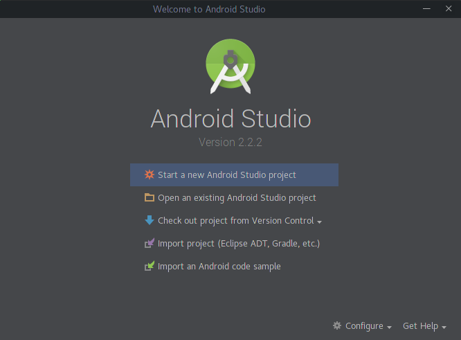
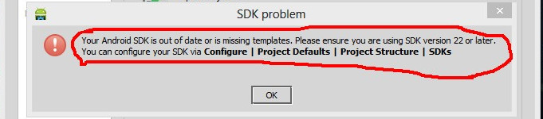

Hello, ^_^ akhirnya dapet mood juga bikin tutorial. hehe tutorial kali ini saya akan
menjelaskan cara install Android Studio di Linux Manjaro dengan Based ArchLinux.
Sedikit cerita. Beberapa Minggu kemaren saya pengen berlajar Android Studio tetapi ketika saya
menginstall android studio disalah satu OS Linux saya yang mana OS nya adalah Manjaro saya sangat kesusahan,
karena tutorial yang saya temui digoogle kebanyakan instalasi nya lancar lancar aja, sedangkan saya sendiri
sangat kesusahan dalam meinstall aplikasi ini.
Pertama saya menemukan dengan cara installasi lewat yaourt
yaourt -S android-studio
akan tetapi terdapat error bahwa android studio tidak mendukung arsitektur 64bit. saya coba lagi dengan enable multilib
agar bisa menginstall android studio. Yaitu dengan edit bagian /etc/pacaman.conf hapus tanda
komentar pada bagian sepeti dibawah ini.
[multilib]
Include = /etc/pacman.d/mirrorlist
link https://wiki.archlinux.org/index.php/multilib
Akan tetapi hasil nya juga sama, dan error yang sama juga.. ToT
Setelah beberapa lama saya temukan tutorial yang pass dan berhasil.
Pertama download dulu Android Studio dilink ini https://developer.android.com/studio/index.html
Kedua install jdk lewat yaourt
yaourt -S jdk
Kalau udah, jalankan perintah dibawah ini
sudo archlinux-java set java-8-jdk
Lalu extract android studio yang didownload waktu pertama tadi, kemudian masuk direktori
androidstudio/bin dan jalan kan perintah ./studio.sh
maka android studio akan berjalan. silahkan dinext next aja.. hihihi
Kalo sudah tampil seperti ini

Pilih Start a new Android Studio Project
Kalau tidak ada error maka selamat anda berhasil instalasi Android Studio.
Kalau ada error seperti ini

Maka lakukan secara berurutan langkah dibawah ini
Buat folder (AndroidStudioProjects) terlebih dulu.
Pada bagian Android SDK cari direktori SDK punya kamu.
Setelah itu klik OK
Selesai.. silahkan dibuka lagi android studio nya dan
Pilih Start a new Android Studio Project
Kalau ada yang salah tolong komentar ya.. Selamat mencoba. ^_^
referensi : https://forum.manjaro.org/t/android-studio-installation-guide/12630 http://stackoverflow.com/questions/21794272/android-sdk-is-missing-out-of-date-or-is-missing-templates-please-ensure-you
 Killua Henka
Killua Henka